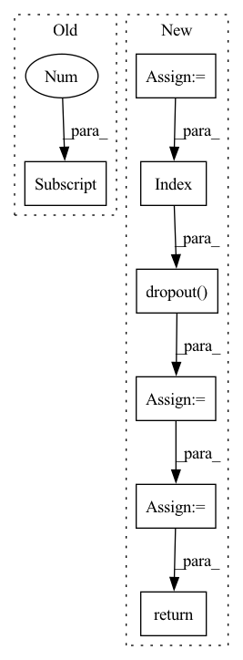

Pattern ID :40963
Before Change
**kwargs: Any,
) -> Tuple[tf.Tensor, tf.Tensor]:
seq_len = tf.shape(x)[1]
x = self.embedding(x, **kwargs) // (batch_size, target_seq_len, d_model)
x *= tf.math.sqrt(tf.cast(self.d_model, x.dtype))
x += tf.cast(self.pos_encoding[:, :seq_len, :], dtype=x.dtype)After Change
) -> tf.Tensor:
tgt = self.embed(tgt, **kwargs) * math.sqrt(self.d_model)
pos_enc_tgt = self.positional_encoding(tgt, **kwargs)
output = pos_enc_tgt
for i in range(self.num_layers):
normed_output = self.layer_norm(output, **kwargs)
output = output + self.dropout(
self.attention[i](normed_output, normed_output, normed_output, target_mask, **kwargs),
**kwargs,
)
normed_output = self.layer_norm(output, **kwargs)
output = output + self.dropout(
self.source_attention[i]( normed_output, memory, memory, source_mask, **kwargs) ,
**kwargs,
)
normed_output = self.layer_norm(output, **kwargs)
output = output + self.dropout(self.position_feed_forward[i](normed_output, **kwargs), **kwargs)
// (batch_size, seq_len, d_model)
return self.layer_norm(output, **kwargs)
In pattern: SUPERPATTERN
Frequency: 3
Non-data size: 7
Instances Fragment ID: 115470433
Project Name: mindee/doctr
Commit Name: 9530f81d15395006b4844299236bdadba11c1dde
Time: 2022-07-01
Author: felixdittrich92@gmail.com
File Name: doctr/models/recognition/transformer/tensorflow.py
M Class Name: Decoder
N Class Name: Decoder
M Method Name: call(5)
N Method Name: call(5)
M Parent Class: NestedObject,layers.Layer
N Parent Class: tf.keras.layers.Layer
M File Name: doctr/models/recognition/transformer/tensorflow.py
N File Name: doctr/models/recognition/transformer/tensorflow.py
M Start Line: 251
M End Line: 265
N Start Line: 160
N End Line: 179
Before Change
padding_mask: Optional[torch.Tensor] = None,
) -> torch.Tensor:
seq_len = x.shape[1] // Batch first = True
x = self.embedding(x) // (batch_size, target_seq_len, d_model)
x *= math.sqrt(self.d_model)After Change
tgt = self.embed(tgt) * math.sqrt(self.d_model)
pos_enc_tgt = self.positional_encoding(tgt)
output = pos_enc_tgt
for i in range(self.num_layers):
normed_output = self.layer_norm(output)
output = output + self.dropout(
self.attention[i](normed_output, normed_output, normed_output, target_mask)
)
normed_output = self.layer_norm(output)
output = output + self.dropout(
self.source_attention[i]( normed_output, memory, memory, source_mask)
)
normed_output = self.layer_norm(output)
output = output + self.dropout(self.position_feed_forward[i](normed_output))
return self.layer_norm(output)
Fragment ID: 115470401
Project Name: mindee/doctr
Commit Name: fddceba7bee5098b4219b7ba6a0bdf4f4a98adfe
Time: 2022-06-09
Author: felixdittrich92@gmail.com
File Name: doctr/models/recognition/transformer/pytorch.py
M Class Name: Decoder
N Class Name: Decoder
M Method Name: forward(5)
N Method Name: forward(5)
M Parent Class: nn.Module
N Parent Class: nn.Module
M File Name: doctr/models/recognition/transformer/pytorch.py
N File Name: doctr/models/recognition/transformer/pytorch.py
M Start Line: 74
M End Line: 91
N Start Line: 147
N End Line: 167
Before Change
for l in range(self.n_layers - 1):
h = self.layers[l](blocks[l], h).flatten(1)
logits = self.layers[-1](blocks[-1] , h).mean(1)
return logits
After Change
def forward(self, blocks, features):
h = features
h = self.input_drop(h)
h_last = None
for l in range(self.n_layers):
h = self.layers[l](blocks[l], h).flatten(1, -1)
if h_last is not None:
h += h_last[: h.shape[0], :]
h_last = h
h = self.norms[l]( h)
h = self.activation(h)
h = self.dropout( h)
// logits = self.layers[-1](blocks[-1], h).mean(1)
h = self.pred_linear(h)
return h
Fragment ID: 115470439
Project Name: ytchx1999/maxp_dgl_graph
Commit Name: 880fef62dc7b31a2f406895038f16195662ebab0
Time: 2021-10-13
Author: 54234005+ytchx1999@users.noreply.github.com
File Name: gnn/models.py
M Class Name: GraphAttnModel
N Class Name: GraphAttnModel
M Method Name: forward(3)
N Method Name: forward(3)
M Parent Class: thnn.Module
N Parent Class: thnn.Module
M File Name: gnn/models.py
N File Name: gnn/models.py
M Start Line: 222
M End Line: 227
N Start Line: 229
N End Line: 249